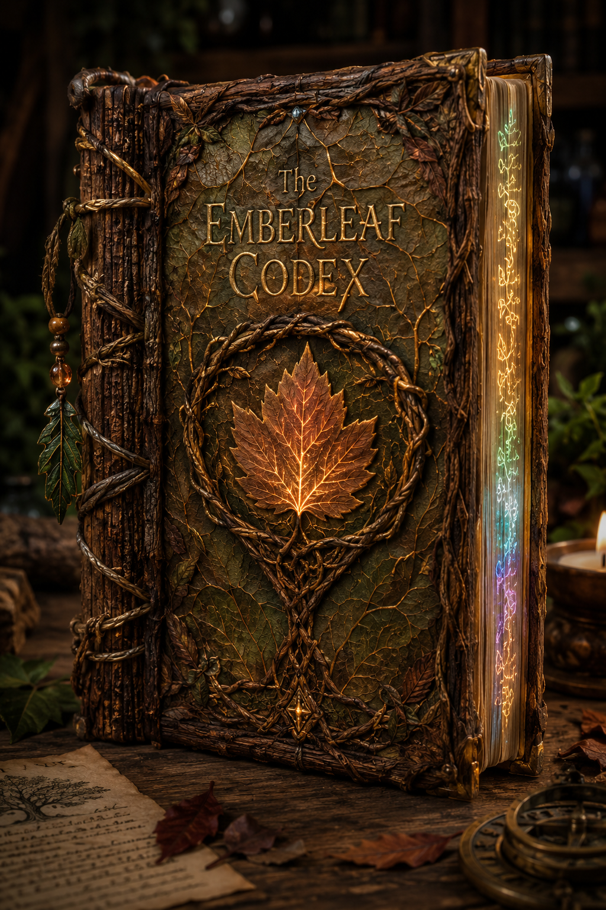

Wondrous item, legendary (requires attunement by a character with proficiency in Performance, Arcana, or History)

Write the artifact's description here...
Write the artifact's history here...
Long ago, a fire spirit wandered the world, yearning for something that would not burn. In a quiet valley, it found a lone apple tree sleeping through the cold. The spirit, fascinated, danced around the tree each night, warming its roots and whispering flame-born lullabies. When spring finally came, the tree awakened—not scorched, but changed. Its branches bore blossoms in winter, its bark shimmered with heatless light, and it spoke the fire spirit’s name in rustling leaves. The fire spirit, satisfied, vanished on the wind. Yet the orchard that grew from that tree has never seen frost, and the apples burn with a sweetness that never spoils.
For 1 hour, the reader gains +1d6 fire damage on all weapon attacks and may cast Fire Shield (warm shield only) once.
In a salt-bitten village perched above the cliffs, the sea would rise each spring and tear down homes as if reclaiming something lost. One year, a girl stood on the shore and sang—not in anger, but in apology. The sea paused. A single wave curled gently around her and drew her under. The villagers mourned her as drowned, but weeks later, she returned, walking ashore with eyes like stormglass and a crown of kelp. Her voice held the hush of the tide, and her songs could part fog, summon rain, or calm beasts. She never spoke of where she went, only that the sea listens when treated kindly.
For 1 hour, the reader gains ability to breathe water and can cast Control Water, Watery Sphere, and Water Breathing (on others) once each.
A shepherd boy once heard voices calling from the sky. Ignoring the warnings of his village, he climbed the tallest peak barefoot, chased by whispers only he could hear. For three days he climbed without food or sleep, until the air itself began to shimmer. At the summit, he found no person—only the wind itself, swirling in spirals, giggling in gusts. It had no form, no face, only laughter and language, and it had chosen him to hear it. He descended lighter than air, and from that day forward, storms parted for him, birds followed him, and secrets rode his breath.
For 1 hour, the reader gains a fly speed equal to their standard speed +10 ft, gain “Windfury” – an extra melee attack when taking the attack action (limit 10 times during the hour) and may cast Gust of Wind twice.
In a quiet mountain village where the chill wind never ceased its mourning, there lived a girl born with frost in her breath and ice in her veins. Her touch could freeze a kettle mid-boil, and no fire warmed her. The villagers feared her, called her cursed, and locked her in a glass house atop a cliff. But the snows loved her. They whispered her lullabies and wove her gowns from moonlight and rime. One winter, when an avalanche threatened the valley, she walked into the storm barefoot and unblinking. With a single exhale, she halted the mountain’s wrath. The snow stilled, the skies hushed—and in the silence, she vanished, leaving behind only a single perfect snowflake that never melts.
For 1 hour, the reader gains resistance to cold damage, their melee attacks deal an additional +1d6 cold damage, and they may cast Armor of Agathys at 3rd spell level once.
One dawn, the sun failed to rise, and shadows grew teeth. Crops withered in an hour. Children cried in sleep. Amidst the darkness, a clever girl climbed the tallest tower, holding a polished bronze mirror. With a trick of angles, she caught the glint of yesterday’s light trapped in dew and flashed it skyward. Startled awake, the sun blinked, laughed, and rose twice as bright to make amends. The girl’s descendants walk in a haloed light, and it is said that shadows still shy away from her bloodline.
For 1 hour, the reader emits bright light in a 10 ft radius, enemies have disadvantage on ranged attacks again you, and may cast Faerie Fire one time, and Daylight three times.
There was once a thief so skilled that she stole her own identity. She crept through palaces as a prince, danced at balls as a duchess, and confessed to crimes committed by no one. Over time, even she forgot her real name. But in forgetting, she became something more—unseen, untethered, unbound. Not even the gods could remember her face. She whispered lies into histories, turning kings into paupers and heroes into myths. Now, stories of her change with every telling. Perhaps she reads this very story, beside you in shadow.
For 1 hour, the reader gains advantage on Stealth checks and may cast Invisibility, Pass Without Trace, and Silence once each.
In the heart of a wind-scoured plain stood a girl who refused to kneel. Her people had long feared the storm—a wrathful spirit cloaked in lightning—but she saw not fury, only hunger. On the night of the black gale, she lashed a steel chain to the tallest stone and raised it to the sky. The storm struck, once, twice—then paused. Through the acrid smoke, the girl still stood, hair alight with static, laughter crackling in her throat. The storm did not strike again. It spoke, in thunderous booms and arcing pulses, and the girl answered. When dawn broke, she was gone—but the stone hummed with her name, and every bolt since has bent slightly toward it.
For 1 hour, the reader’s weapon attacks deal +1d6 lightning damage, and the reader may cast Lightning Bolt once. If standing outdoors during a storm, the spell deals maximum damage.
There was once a village that lived in fear of a creature that no one had seen, but all had heard—a deep roar from the mountains that froze even fire in its hearth. Each year, the roar came closer, until the bravest among them, a one-armed blacksmith, climbed the slopes alone. He carried no blade, only his hammer, and no shield but a vow: “If it takes me, it will remember me.” He never returned. But the roars stopped. In his forge, long since gone cold, was found a single bootprint scorched into stone—far too large to be his.
For 1 hour, the reader becomes immune to the frightened condition, gains +1 to AC, and may cast Heroism and Shield of Faith once each.
A lonely astronomer watched the moon each night and noticed things others did not—shifts in its gaze, ripples in its light. One night, it blinked. On the next full moon, a figure made of moonlight descended, her face half in shadow. “You have seen my secret,” she whispered. “Now see the world as I do.” She kissed his forehead, and for a single night, he wandered among dreams and illusions, where time moved backward and stars sang. When he awoke, his hair was silver, his eyes aglow. He never aged again, and he never slept, for the moon watched over him, even when he looked away.
For 1 hour, the reader gains darkvision out to 120 feet, immunity to radiant damage, resistance to psychic damage, and may cast Moonbeam and See Invisibility once each.
A clockmaker once prided himself on perfect time. Every chime struck true, every second known. One day, a coyote walked into his shop, dressed in bells and smiles, and asked to buy a minute. The clockmaker refused. So the coyote stole it—and the next minute, and the next, until time unraveled like ribbon. The townsfolk danced in reverse. Babies scolded their mothers. The sun rose into the west and set into dreams. To set things right, the clockmaker bargained a trick for a trick. He still tells time, but now it lies.
For 1 hour, the reader gains advantage on Wisdom Checks and Saving Throws, and may cast Haste (Self Only) and Misty Step once each.
Beneath the mountain roots, where no sun ever touched, a child was born from stone. His mother was silence, his father the weight of the world. He spoke the language of ore and sang to sleeping gems. When dwarves tunneled into his cradle, he welcomed them—not with gold, but with knowledge: which stones held strength, which veins sang war, which cracks whispered secrets. They crowned him King Below, though he never wore a crown—only dust, and a smile heavy as bedrock.
For 1 hour, the reader gains tremorsense out to 30 feet, resistance to bludgeoning damage, add +1d6 to the damage of melee bludgeoning attacks, advantage on Constitution Checks and Saving Throws, and may cast Stone Shape once.
There once stood a tower with no doors and no windows, made of polished obsidian and etched with constellations that had never been seen. No one built it. It simply was. The villagers whispered that it had been a wizard’s final thought before he died, crystallized into stone by the force of his ambition. Many came to study it, but none could enter—until a child who had never studied a spell spoke its name aloud, though it had never been taught to him. The tower opened for him. He walked in and did not return for a century. When he finally stepped out, time curved around his steps, and magic bent toward him like flowers to the sun.
For 1 hour, the reader gains Advantage on Intelligence checks and Saving Throws, spell save DC and spell attack bonus each increase by +1, and may cast Arcane Eye and Counterspell once each at character level.
Far beyond the edges of the known woods, where birds do not sing and no seasons pass, lies a garden that grows in perfect stillness. The trees there are white as bone, and the flowers bloom only once—when something dies nearby. It is said that a mortal once wandered in, weeping from loss, and lay down among the ivy. From her breath rose a final petal, and when it touched the soil, the garden opened its eyes. She spoke gently to the worms and the rot, and they crowned her queen—not of life, but of endings. Under her rule, decay was no longer a curse, but a promise: that everything broken would return to earth, and rest.
For 1 hour, the reader gains resistance to necrotic damage, when they reduce a creature to 0 HP, regain 2d8 HP (once per turn), and can cast Animate Dead and Speak with Dead once each.
In a sunless corner of the world, beneath a sky stitched shut with black thread, an endless banquet stretches across a hall carved from bone and root. The guests wear masks that breathe, and their laughter sounds like chimes in a storm. They dine not on food, but on thoughts, dreams, and the memory of memory. A stranger once wandered into the feast—hooded, silent, and famished for meaning. They were offered a goblet filled with their own forgotten fears, and as they drank, their eyes turned inside out to witness truths never meant for mortals. Now they sit at the head of the table, wearing a crown of candle flames and humming a song no living mouth can sing. The feast continues, eternal, beneath and above the world.
For 1 hour, the reader gains resistance to necrotic and psychic damage. Once during this time, they may cast Arms of Hadar (DC 16). For the duration, aberrations have disadvantage on all attacks against you, and you have advantage on all Saving Throws against the abilities and spells of aberrations – This property ends if you deal damage to the aberration.
Atop a hill that doesn’t appear on any map, once a year when the moon wanes to a perfect silver sliver, the Mirror Masquerade is held. The revelers arrive with no memory of how they got there, dressed in finery that reflects the dreams they never pursued. Every surface—from the wine to the dancers’ eyes—shows not what is, but what might have been. As the music swells, the guests trade identities like playing cards, twirling through realities where truth is negotiable. It’s said that those who remove their masks vanish forever—some say into their own reflections, others into the stories of others.
For 1 hour, the reader may cast Mirror Image at will. They have advantage on saving throws against illusion spells, and cause disadvantage to enemies saving against their illusion spells. Additionally, illusion spells the reader casts inflict +1die of damage. Once during this time, they may cast Major Image.
When the world was still young and shadows stretched long over the earth, a lonely shepherd knelt beneath a hill riddled with roots and old bones. He whispered a plea not in words, but in the hum of wind over fur and fang. Something old and antlered answered—a spirit with moss in its voice and teeth like bark. In exchange for a promise never to raise hand against nature, the Hollow King granted the shepherd a guardian for every star in the sky. Wolves padded beside him, crows perched on his shoulders, and a bear slept at his feet. He was never alone again, nor lost, even in the deepest woods. The pact remains, offered in silence to those who still know how to listen.
For 1 hour, the reader may cast Conjure Animals and Speak with Animals once each. Beasts will not attack them unless magically compelled to or attacked by the reader. Gain advantage on Animal Handling and Nature checks.
In a rose-choked manor lost to time, nobles gather for a toast that never ends. They sip golden wine from gilded goblets and speak in riddles polished by centuries. None remember what was first celebrated—only that the host wears a mask made of pearl and gold, and that to refuse the toast is to wither on the spot. As the rose vines creep ever deeper into the banquet hall, guests bloom with opulence—clothing that shimmers with luster, voices laced with honey, and smiles too sharp to be kind. The toast always returns to the same phrase: May beauty bind the blade. When the wine is spilled, it stains the air red and never falls.
For 1 hour, gain advantage on Charisma checks and Saving Throws. Once during the hour, you may cast Charm Monster. Enemies who attack you for the first time must succeed on a DC 16 Wisdom saving throw or waste their action admiring you instead.
There exists a slim, ink-black figure that slips through the cracks in memory. It calls itself the Thought Thief, though it has a thousand other names, all forgotten. Each night, it picks the pockets of sleeping minds, pulling out forgotten faces, mislaid words, and the directions to dreams never taken. In a ledger stitched from silence, it records each theft in dream-ink, stored for reasons no one understands—not even the thief itself. It is not cruel, only curious. Those who read from its ledger gain strange clarity, as if briefly standing outside their own thoughts, able to turn them over like coins. But every clarity leaves a fog somewhere else.
For 1 hour, the reader gains advantage on Intelligence, Wisdom, and Charisma saving throws. Gain the Mind Sliver Cantrip with an additional +1d6 damage. Once during the hour, they may cast Detect Thoughts.
High atop a forgotten peak, where even the clouds dare not linger, the dragon Verithrax carved his thoughts into stone. Not his hoard—though he had one vast enough to flood kingdoms—but his words. With claws of molten gold, he etched proverbs, riddles, and spells into the mountainside, each one a fragment of his wisdom and wrath. As centuries passed and his body turned to ash in a final storm of lightning and flame, only the stones remained. Travelers who sleep among them wake speaking languages they never knew, dreaming of flight, and feeling power within them. It is said the mountain now speaks to those who listen—not with a voice, but with a presence that curls like smoke around the soul.
For 1 hour, the reader gains resistance to one damage type of their choice: fire, cold, lightning, acid, or poison. They may also cast Legend Lore once. Once during this hour, they may use a breath weapon: As an action, exhale a 30-ft cone (Dexterity Save DC 16). Creatures take 6d8 damage of the chosen type on a failure, or half on a success.